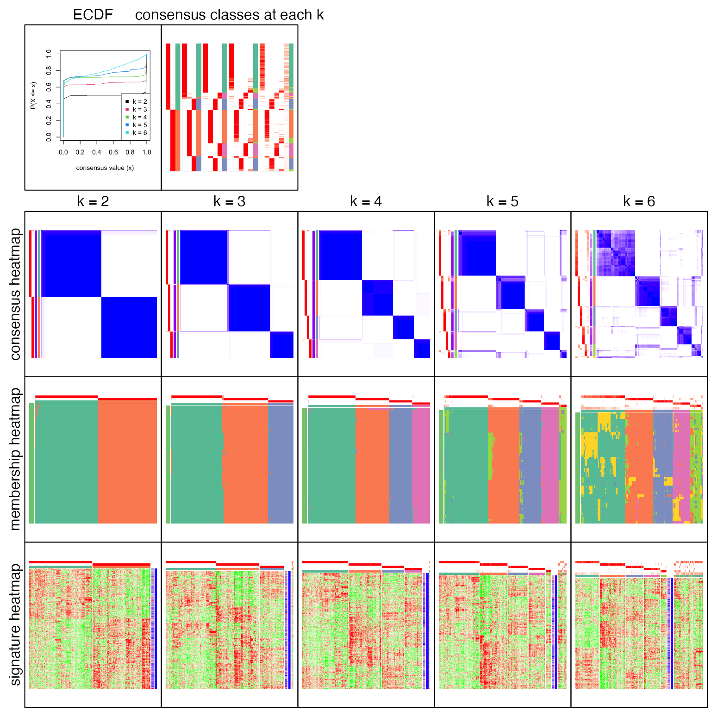
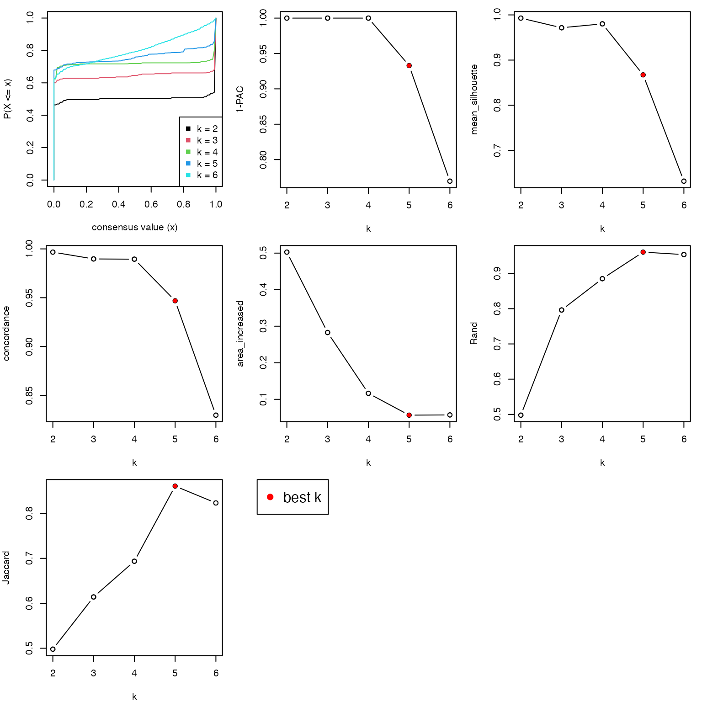
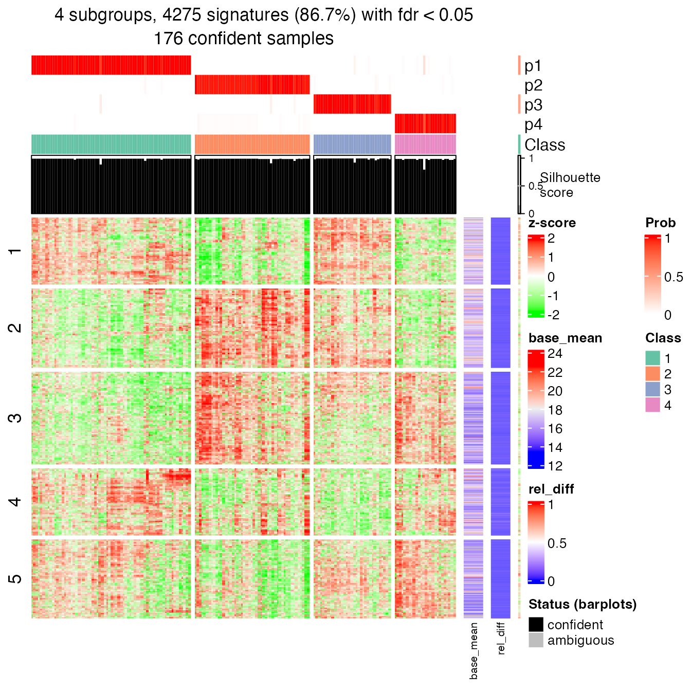
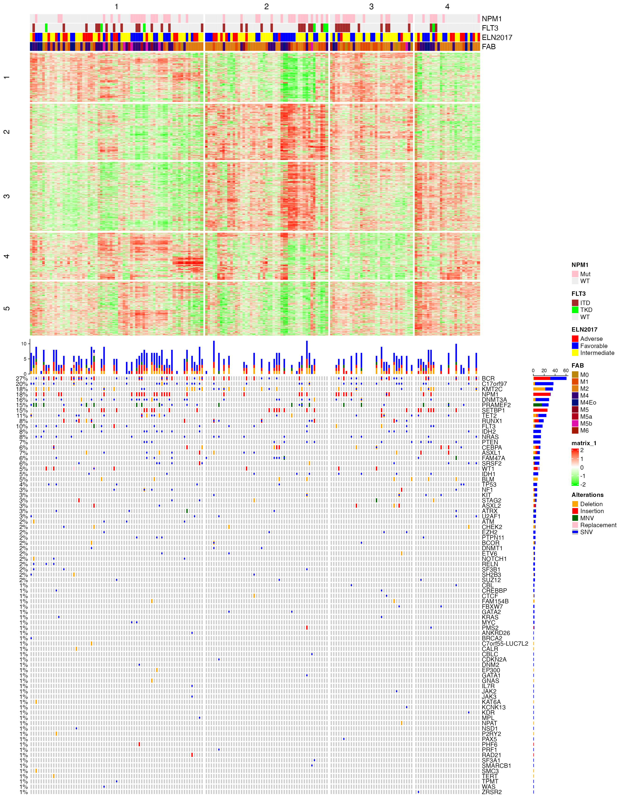
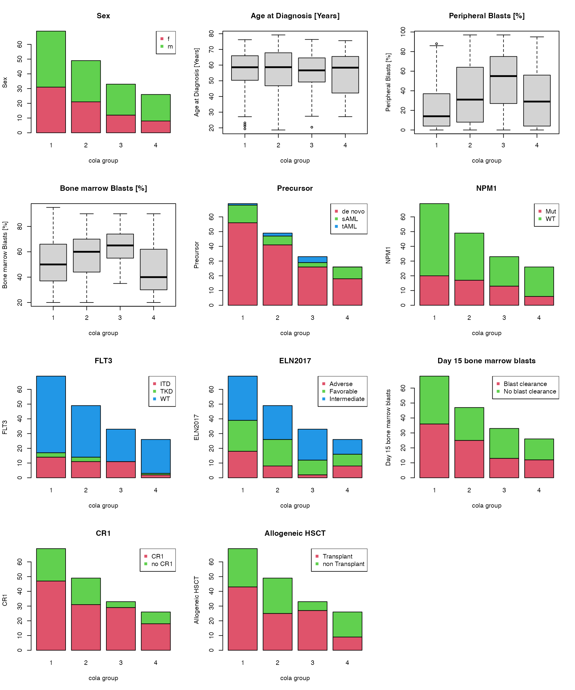
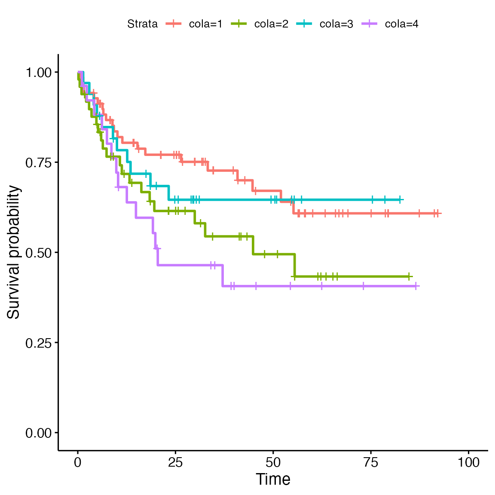
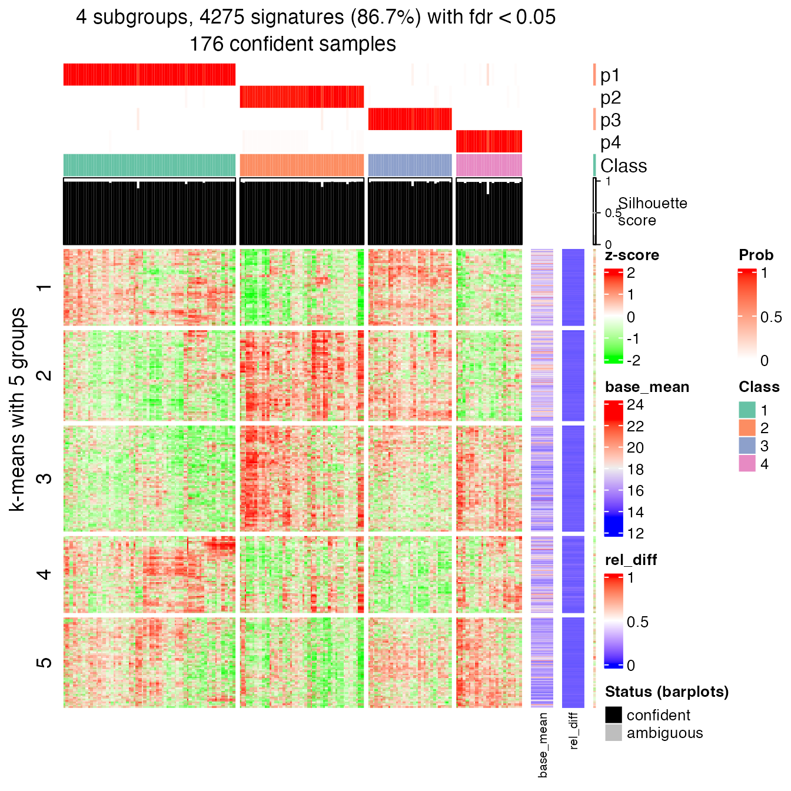
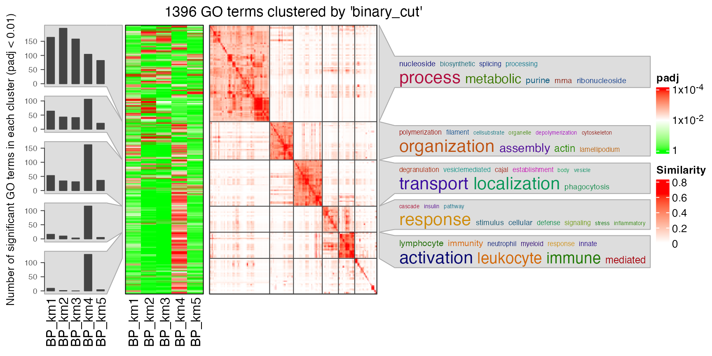
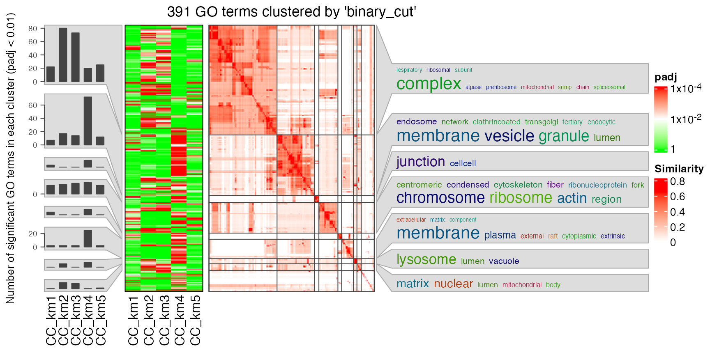

vignettes/AML.Rmd
AML.RmdI recently came across a paper entitled “The proteogenomic subtypes of acute myeloid leukemia” published on Cancer Cell, which performed subtype classifications on acute myeloid leukemia (AML) with the proteomics data. In the paper, the classification was performed by hierarchical clustering on the distance matrix of the proteomics dataset.
The motivations for me to reanalyze this dataset are the following two:
First the data (the Excel sheet, Data S1 Discovery Cohort.xlsx) is from the Supplementary Data S1 of the paper.
I first read the clinical annotation data. There are quite a lot of columns and I don’t really need all of them.
library(readxl)
anno = read_xlsx("~/Downloads/Data S1 Discovery Cohort.xlsx", sheet = 2)
anno = as.data.frame(anno)
rownames(anno) = anno[, 1] # the first column is sample id
anno = anno[, -1]
head(anno)## Sex Age at Diagnosis [Years] Peripheral Blasts [%] Bone marrow Blasts [%]
## F1 f 61.01096 1 40
## F2 m 68.27671 56 54
## F4 f 59.23836 3 50
## F5 m 65.95890 0 30
## F6 f 41.03014 37 51
## F7 m 63.93151 25 27
## Precursor Karyotype NPM1 FLT3 FLT3ITD VAF
## F1 sAML 46 XX del (11)(q14q24)[15], 46,XX [5] WT WT NA
## F2 de novo 47-48,XY,+4,+8,+13 cp WT WT NA
## F4 sAML 46, XX WT ITD 4.34
## F5 de novo 46,XY WT WT NA
## F6 de novo 46,XX,-7,+8, +11 WT WT NA
## F7 de novo 46,XY WT WT NA
## ELN2017 FAB Induction cycles [n] Day 15 bone marrow blasts CR1
## F1 Intermediate M2 2 No blast clearance no CR1
## F2 Adverse M5 2 No blast clearance CR1
## F4 Adverse M4 2 Blast clearance CR1
## F5 Adverse M5b 1 Blast clearance CR1
## F6 Adverse M4 2 No blast clearance no CR1
## F7 Intermediate M1 2 No blast clearance CR1
## Allogeneic HSCT Death Event OS [months] Relapse Event Relapse Date
## F1 non Transplant 1 10.316222 0 <NA>
## F2 non Transplant 1 6.176591 1 2013-09-26
## F4 Transplant 0 41.002053 0 <NA>
## F5 non Transplant 1 7.227926 1 2013-08-05
## F6 Transplant 1 55.195072 1 2016-07-20
## F7 non Transplant 0 25.954825 1 2020-07-13
## RFS [months]
## F1 NA
## F2 2.529774
## F4 41.002053
## F5 5.158111
## F6 NA
## F7 24.574949Next I read the mutation data and covert it into a matrix where rows are genes and columns are samples. I also format the gene symbols that if there are mutiple genes annotated for a single mutation, only the first gene symbol is used.
mut = read_xlsx("~/Downloads/Data S1 Discovery Cohort.xlsx", sheet = 3)
mut = as.data.frame(mut)
mut[, "Gene"] = gsub(",.*$", "", mut[, "Gene"])
library(reshape2)
f = function(x) paste(unique(x), collapse = ";")
mut = acast(mut, Gene ~ Pat_ID, f, value.var = "Type")
mut[1:5, 1:5]## F1 F10 F101 F102 F103
## ANKRD26 "" "" "" "" ""
## ASXL1 "" "" "" "" ""
## ASXL2 "" "" "" "" ""
## ATM "" "" "SNV" "" ""
## ATRX "SNV" "" "" "" "SNV"Next I read the proteomics data matrix. Note here I use the matrix where missing values are all imputed. In the proteomics data matrix, rows actually correspond to proteins. For the ease of discussion, I always write “genes” to describe rows of the proteomics data matrix.
mat = read_xlsx("~/Downloads/Data S1 Discovery Cohort.xlsx", sheet = 6)
mat = mat[-1, ]
gene = unname(unlist(mat[, "PG.Genes"]))
mat = mat[, 1:177]
cn = colnames(mat)
mat = as.numeric(as.matrix(mat))
dim(mat) = c(length(gene), 177)
colnames(mat) = cn
l = is.na(gene)
gene = gene[!l]
mat = mat[!l, ]Similar as the mutation matrix, I also performed cleaning on gene symbols.
There are some genes wrongly formatted to dates in Excel. Here I convert them back;
grep("^\\d+-", gene, value = TRUE)## [1] "5-Mar" "15-Sep" "6-Sep" "2-Sep" "7-Sep" "1-Sep" "8-Sep" "5-Sep"
## [9] "11-Sep" "9-Sep"Now I can check whether all genes are unique:
any(duplicated(gene))## [1] FALSESince now all genes are unique, I can assign them as row names of the matrix.
rownames(mat) = geneNext I adjust the order of the annotation table and mutation matrix to make them consistent to the proteomics data matrix.
anno = anno[colnames(mat), ]
mut2 = matrix("", nrow = nrow(mut), ncol = ncol(mat))
rownames(mut2) = rownames(mut)
colnames(mut2) = colnames(mat)
mut2[rownames(mut), colnames(mut)] = mut
dim(anno)## [1] 177 20
dim(mut2)## [1] 79 177
dim(mat)## [1] 5193 177## [1] TRUE## [1] TRUEIn the paper, the subtype classification was based on hierarchical clustering on the distance matrix of samples. Here I perform the subtype classification by consensus partitioning, with the cola package.
In the following code, ATC is used to extract top features and skmeans is used for partitioning.
library(cola)
set.seed(12345)
mat = adjust_matrix(mat) # simply to remove outliers if there is any
res = consensus_partition(mat, top_value_method = "ATC", partition_method = "skmeans", verbose = FALSE)collect_plots() generates a lot of plots that help to decide which number of groups gives “the best partition”.
collect_plots(res, verbose = FALSE)
collect_stats() applies several quantitative measures for deciding the best k.
collect_stats(res)
All the plots show 4 is the optimized number of subgroups.
best_k = 4The subtype labels are saved in the variable cl. And the size of each subgroup are:
cl = get_classes(res, k = best_k)[, 1]
table(cl)## cl
## 1 2 3 4
## 69 49 33 26Next I make the signature heatmap which contains genes showing significantly difference between subgroups. The object tb contains the results of the signature analysis.
tb = get_signatures(res, k = best_k, verbose = FALSE)
head(tb)## which_row fdr p_value mean_1 mean_2 mean_3 mean_4
## 1 1 1.314847e-13 1.245953e-14 15.74037 16.34356 16.05322 16.32805
## 2 2 1.957486e-04 1.140445e-04 13.48803 13.87960 13.38700 14.05535
## 3 3 9.774668e-13 1.113595e-13 15.42199 16.03708 15.30332 16.49124
## 4 4 8.892207e-08 2.646211e-08 14.33122 15.03357 15.10674 14.29921
## 5 5 1.412425e-11 2.061517e-12 15.60644 16.27084 15.95040 16.32491
## 6 6 3.339018e-02 2.821209e-02 18.36344 19.01163 18.20078 18.71306
## group_diff scaled_mean_1 scaled_mean_2 scaled_mean_3 scaled_mean_4
## 1 0.6031946 -0.6620782 0.6121620 -0.001177959 0.5793944
## 2 0.6683547 -0.2350354 0.2942459 -0.371595263 0.5318077
## 3 1.1879209 -0.3971493 0.3986856 -0.550696614 0.9862904
## 4 0.8075347 -0.4030978 0.4389542 0.526675741 -0.4414770
## 5 0.7184693 -0.6126957 0.5320413 -0.020055290 0.6251964
## 6 0.8108483 -0.1444529 0.3199708 -0.261002551 0.1060503
## group_diff_scaled km
## 1 1.2742402 3
## 2 0.9034030 3
## 3 1.5369870 3
## 4 0.9681528 2
## 5 1.2378921 3
## 6 0.5809734 3Next I make an integrative visualization that contains subgroup classification, annotations, signatures and mutations. Note in the following plot, columns always correspond to the same samples in the heatmap and in the oncoprint.
m_sig = mat[tb$which_row, ]
m_sig = t(scale(t(m_sig)))
library(ComplexHeatmap)
library(circlize)
Heatmap(m_sig, col = colorRamp2(c(-2, 0, 2), c("green", "white", "red")),
top_annotation = HeatmapAnnotation(df = anno[, c("NPM1", "FLT3", "ELN2017", "FAB")],
col = list(NPM1 = c("WT" = "#EEEEEE", "Mut" = "pink"),
FLT3 = c("WT" = "#EEEEEE", "ITD" = "brown", "TKD" = "green"),
ELN2017 = c("Intermediate" = "yellow", "Favorable" = "blue", "Adverse" = "red"))
),
row_split = tb$km, column_split = cl, show_row_names = FALSE, show_column_names = FALSE,
cluster_row_slices = FALSE, cluster_column_slices = FALSE,
show_row_dend = FALSE, show_column_dend = FALSE
) %v%
oncoPrint(mut2, alter_fun = list(
"background" = function(x, y, w, h)
grid.rect(x, y, w - unit(2, "pt"), h - unit(2, "pt"), gp = gpar(fill = "#CCCCCC", col = NA)),
"Deletion" = function(x, y, w, h)
grid.rect(x, y, w - unit(2, "pt"), h - unit(2, "pt"), gp = gpar(fill = "orange", col = NA)),
"Insertion" = function(x, y, w, h)
grid.rect(x, y, w - unit(2, "pt"), h - unit(2, "pt"), gp = gpar(fill = "red", col = NA)),
"MNV" = function(x, y, w, h)
grid.rect(x, y, w - unit(2, "pt"), h - unit(2, "pt"), gp = gpar(fill = "darkgreen", col = NA)),
"Replacement" = function(x, y, w, h)
grid.rect(x, y, w - unit(2, "pt"), h - unit(2, "pt"), gp = gpar(fill = "pink", col = NA)),
"SNV" = function(x, y, w, h)
grid.rect(x, y, w - unit(2, "pt"), h*0.33, gp = gpar(fill = "blue", col = NA))
), col = c("Deletion" = "orange", "Insertion" = "red", "MNV" = "darkgreen", "Replacement" = "pink", "SNV" = "blue"),
height = unit(24, "cm")
)
I use test_between_factors() to check the correlation between cola subgroups and groups in the annotation table anno. If the annotation values are numeric, one-way ANOVA is used and if the annotation values are categorical, chi-square test is used. In the following result, values are p-values from the corresponding tests.
anno2 = anno[, c("Sex",
"Age at Diagnosis [Years]",
"Peripheral Blasts [%]",
"Bone marrow Blasts [%]",
"Precursor",
"NPM1",
"FLT3",
"ELN2017",
"Day 15 bone marrow blasts",
"CR1",
"Allogeneic HSCT")]
test_between_factors(anno2, as.character(cl))## as.character(cl)
## Sex 0.5880710934
## Age at Diagnosis [Years] 0.9416598486
## Peripheral Blasts [%] 0.0001197542
## Bone marrow Blasts [%] 0.0007065670
## Precursor 0.0418247843
## NPM1 0.5251085800
## FLT3 0.2800890015
## ELN2017 0.1660291677
## Day 15 bone marrow blasts 0.5635794095
## CR1 0.1001524214
## Allogeneic HSCT 0.0017604648The tests show annotations of “Peripheral Blasts [%]”, “Bone marrow Blasts [%]” and “Allogeneic HSCT” have significant relations to the cola subgroup classification.
Next chunk of code visualizes how the different annotations distribute in the cola subgroups. Boxplots are used when the annotation values are numeric and barplots are used when the annotation values are categorical.
par(mfrow = c(4, 3))
for(i in seq_len(ncol(anno2))) {
if(is.numeric(anno2[[i]])) {
boxplot(anno2[[i]] ~ cl, xlab = "cola group", ylab = colnames(anno2)[i], main = colnames(anno2)[i])
} else {
tbv = table(anno2[[i]], cl)
level = rownames(tbv)
barplot(table(anno2[[i]], cl), xlab = "cola group", ylab = colnames(anno2)[i],
col = 1+ seq_along(level), main = colnames(anno2)[i])
legend("topright", pch = 15, legend = level, col = 1+ seq_along(level))
}
}
In the annotation table, there is also the survival data, thus, I can check the survival curves in the four cola subgroups.
anno$cola = cl # append `cl` to the annotation table
library("survival")
library("survminer")
fit = survfit(Surv(`OS [months]`, `Death Event`) ~ cola, data = anno)
ggsurvplot(fit)
Next I check the pairwise survival difference. Values in the results are p-values. We can see cola group 1 and group 4 show the most significant survival difference.
pairwise_survdiff(Surv(`OS [months]`, `Death Event`) ~ cola, data = anno, p.adjust.method = "none")##
## Pairwise comparisons using Log-Rank test
##
## data: anno and cola
##
## 1 2 3
## 2 0.074 - -
## 3 0.624 0.346 -
## 4 0.026 0.565 0.150
##
## P value adjustment method: noneRecall the following signature heatmap which I showed before:
get_signatures(res, k = best_k, verbose = FALSE)
In rows, there are five row groups. I apply Gene Ontology enrichment on the genes in the five row groups separately, with the function functional_enrichment(). The enrichment results are visualized by the package simplifyEnrichment.
In the following heatmap, the left heatmap (green-red) illustrates the adjusted p-values (FDRs) of GO terms enriched in the corresponding group of genes. The right heatmap shows the similarity of GO terms. The word clouds illustrates the overrepresented keywords from the GO terms in each GO cluster.
lt = functional_enrichment(res, k = best_k, ont = "BP", verbose = FALSE)
library(simplifyEnrichment)
simplifyGOFromMultipleLists(lt, verbose = FALSE)
I also apply Gene Ontology enrichment with the Cellular Component (CC) terms. Similar code as below:
lt = functional_enrichment(res, k = best_k, ont = "CC", verbose = FALSE)
library(simplifyEnrichment)
simplifyGOFromMultipleLists(lt, verbose = FALSE)
In the original paper, all 177 samples were classified into six subgroups. However, I cannot find the subgroup classification results in the paper or in the supplementary files, thus I cannot compare cola classification to the classification performed in the paper.
## R version 4.3.1 (2023-06-16)
## Platform: x86_64-apple-darwin20 (64-bit)
## Running under: macOS Ventura 13.2.1
##
## Matrix products: default
## BLAS: /Library/Frameworks/R.framework/Versions/4.3-x86_64/Resources/lib/libRblas.0.dylib
## LAPACK: /Library/Frameworks/R.framework/Versions/4.3-x86_64/Resources/lib/libRlapack.dylib; LAPACK version 3.11.0
##
## Random number generation:
## RNG: L'Ecuyer-CMRG
## Normal: Inversion
## Sample: Rejection
##
## locale:
## [1] C/UTF-8/C/C/C/C
##
## time zone: Europe/Berlin
## tzcode source: internal
##
## attached base packages:
## [1] grid stats graphics grDevices utils datasets methods
## [8] base
##
## other attached packages:
## [1] simplifyEnrichment_1.11.1 BiocGenerics_0.48.1
## [3] survminer_0.4.9 ggpubr_0.6.0
## [5] ggplot2_3.4.4 survival_3.5-8
## [7] circlize_0.4.15 ComplexHeatmap_2.18.0
## [9] doRNG_1.8.6 rngtools_1.5.2
## [11] foreach_1.5.2 cola_2.9.1
## [13] reshape2_1.4.4 readxl_1.4.3
## [15] knitr_1.44
##
## loaded via a namespace (and not attached):
## [1] splines_4.3.1 bitops_1.0-7 ggplotify_0.1.2
## [4] tibble_3.2.1 cellranger_1.1.0 polyclip_1.10-6
## [7] XML_3.99-0.14 lifecycle_1.0.4 rstatix_0.7.2
## [10] doParallel_1.0.17 rprojroot_2.0.3 NLP_0.2-1
## [13] lattice_0.21-9 MASS_7.3-60 backports_1.4.1
## [16] magrittr_2.0.3 sass_0.4.8 rmarkdown_2.25
## [19] jquerylib_0.1.4 yaml_2.3.7 cowplot_1.1.1
## [22] DBI_1.1.3 RColorBrewer_1.1-3 eulerr_7.0.0
## [25] abind_1.4-5 zlibbioc_1.46.0 purrr_1.0.2
## [28] ggraph_2.1.0 RCurl_1.98-1.12 yulab.utils_0.1.0
## [31] tweenr_2.0.2 GenomeInfoDbData_1.2.10 IRanges_2.36.0
## [34] KMsurv_0.1-5 S4Vectors_0.40.2 enrichplot_1.20.3
## [37] tm_0.7-11 ggrepel_0.9.4 irlba_2.3.5.1
## [40] tidytree_0.4.5 genefilter_1.82.1 annotate_1.78.0
## [43] brew_1.0-8 commonmark_1.9.0 pkgdown_2.0.7
## [46] codetools_0.2-19 DOSE_3.26.2 xml2_1.3.6
## [49] ggforce_0.4.1 tidyselect_1.2.0 shape_1.4.6
## [52] aplot_0.2.2 farver_2.1.1 viridis_0.6.4
## [55] matrixStats_1.2.0 stats4_4.3.1 jsonlite_1.8.8
## [58] GetoptLong_1.0.5 tidygraph_1.2.3 iterators_1.0.14
## [61] systemfonts_1.0.5 tools_4.3.1 treeio_1.24.3
## [64] ragg_1.2.6 Rcpp_1.0.11 glue_1.6.2
## [67] gridExtra_2.3 xfun_0.40 qvalue_2.32.0
## [70] MatrixGenerics_1.12.3 GenomeInfoDb_1.36.4 dplyr_1.1.3
## [73] withr_2.5.2 fastmap_1.1.1 fansi_1.0.5
## [76] digest_0.6.33 R6_2.5.1 gridGraphics_0.5-1
## [79] microbenchmark_1.4.10 textshaping_0.3.7 colorspace_2.1-0
## [82] GO.db_3.17.0 Cairo_1.6-2 markdown_1.10
## [85] RSQLite_2.3.1 utf8_1.2.3 tidyr_1.3.0
## [88] generics_0.1.3 data.table_1.14.8 graphlayouts_1.0.1
## [91] httr_1.4.7 scatterpie_0.2.1 pkgconfig_2.0.3
## [94] gtable_0.3.4 blob_1.2.4 impute_1.74.1
## [97] XVector_0.40.0 survMisc_0.5.6 shadowtext_0.1.2
## [100] clusterProfiler_4.8.3 htmltools_0.5.7 carData_3.0-5
## [103] fgsea_1.26.0 clue_0.3-65 scales_1.2.1
## [106] Biobase_2.60.0 png_0.1-8 ggfun_0.1.3
## [109] km.ci_0.5-6 rjson_0.2.21 nlme_3.1-163
## [112] org.Hs.eg.db_3.17.0 cachem_1.0.8 zoo_1.8-12
## [115] GlobalOptions_0.1.2 stringr_1.5.0 parallel_4.3.1
## [118] HDO.db_0.99.1 AnnotationDbi_1.62.2 desc_1.4.2
## [121] proxyC_0.3.3 pillar_1.9.0 vctrs_0.6.4
## [124] slam_0.1-50 car_3.1-2 xtable_1.8-4
## [127] cluster_2.1.4 evaluate_0.22 magick_2.8.0
## [130] cli_3.6.2 compiler_4.3.1 rlang_1.1.2
## [133] crayon_1.5.2 ggsignif_0.6.4 labeling_0.4.3
## [136] mclust_6.0.0 skmeans_0.2-16 plyr_1.8.9
## [139] fs_1.6.3 stringi_1.7.12 viridisLite_0.4.2
## [142] BiocParallel_1.34.2 munsell_0.5.0 Biostrings_2.68.1
## [145] lazyeval_0.2.2 GOSemSim_2.26.1 Matrix_1.6-1.1
## [148] patchwork_1.1.3 bit64_4.0.5 KEGGREST_1.40.1
## [151] gridtext_0.1.5 igraph_1.6.0 broom_1.0.5
## [154] memoise_2.0.1 RcppParallel_5.1.7 bslib_0.6.1
## [157] ggtree_3.8.2 fastmatch_1.1-4 bit_4.0.5
## [160] downloader_0.4 gson_0.1.0 ape_5.7-1